Feed Forward Neural Network
In this tutorial, we will explore how feedforward neural networks work. We’ll discuss neurons, layers, activation functions, and cost functions. Then, we’ll see in detail how we train a neural network using backpropagation. We will derive the backpropagation formulae step-by-step and implement a neural network from scratch using Python’s Numpy package only.
Learning Objectives:
At the end of this tutorial, the reader should be able to:
- Calculate the forward pass of a neural network;
- Calculate the backpropagation of a neural network;
- Implement a neural network from scratch in Python;
- Implement a neural network using PyTorch;
Prerequisites:
It is assumed that the reader :
- possesses a level of proficiency in computing derivatives, particularly in the application of the Chain Rule.
- has some Python knowledge;
- is able to perform matrix multiplication;
Neural Networks are certainly among the most “famous” models in machine learning. They power many tools that we use nowadays, from computer vision to generative models and medical applications. If this is not the first post you’ve read about neural networks, you surely have seen a diagram like the one below.
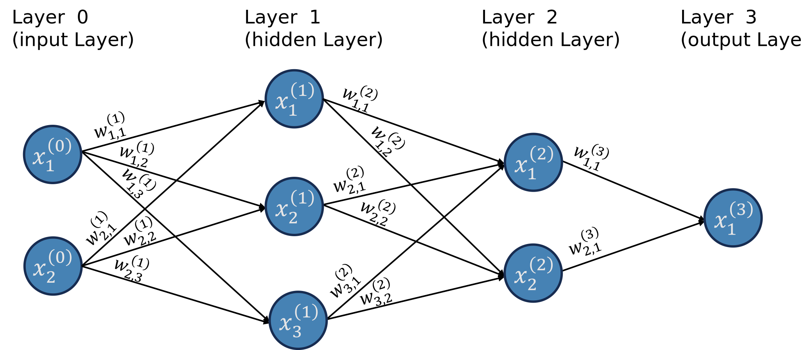
When I started learning about neural networks, I found the standard diagram confusing because it doesn’t explicitly show a crucial component that will be needed later for the backpropagation algorithm. Therefore, for this tutorial, we will explicitly include this component in the diagram, as shown in Figure 2.

Let’s introduce some terminology:
Layers: This neuron network has four layers.
- Input layer: the first layer is known as the input layer; it brings the data into the network.
- Output layer: the last layer is known as the output layer; it provides the numerical outputs of the neural network.
- Hidden layers: the layers between the input and output layers are known as the hidden layers; in this case, layers 1 and 2 are hidden layers.
Neurons: the blue circles are the so-called neurons; neurons send a numerical value as a signal for the neurons in the following layer.
- Different layers can have different numbers of neurons.
- The signals neurons in the input layer send are the data.
- The number of neurons in the input layer is the number of attributes in the dataset.
- Activation function: a non-linear function that specifies how neurons process the signals they receive. This function is not explicitly showed in the graph, but it is “inside” the neuron.
Weights: the weights are numerical values (positive or negative) that amplify or reduce the strength of a neuron’s signal to another neuron; they are represented in the graph by the lines;
Receptors: we will call the boxes attached to each neuron the neuron’s receptor, which will collect and aggregate all the signals a neuron receives from other neurons (this is not standard language);
I’ve always found the terminology very confusing without looking at the equations. For example, when I say that weights amplify or reduce the signal, how exactly does that happen? How exactly do receptors collect and aggregate all the signals? How do neurons process the signals passed by the receptors? Before we go over these in detail, let’s review the notation we are using.
Notation
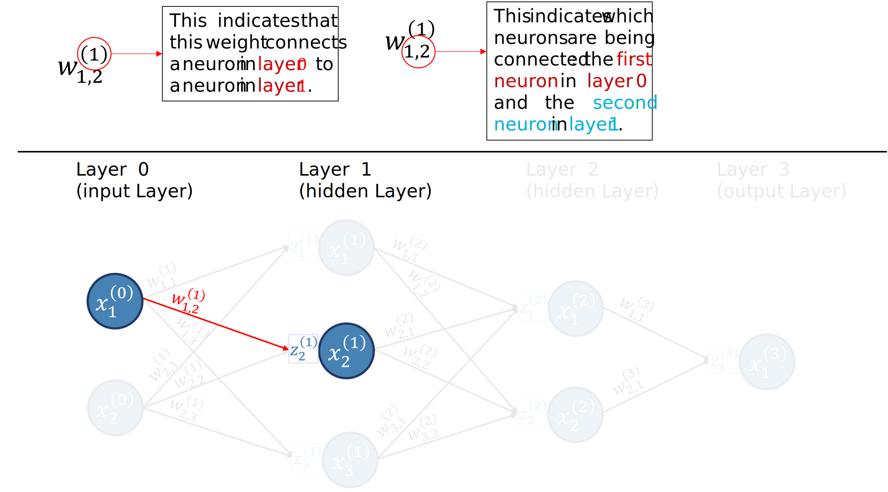
- (l) refers to the layer, and goes from 0 to L, where the Lth layer is the output layer.
- n^{(l)} is the number of neurons in layer l.
- x^{(l)}_{k} is the kth neuron in layer l.
- x^{(l)}_{i,k} is the value of the kth neuron in layer l for the ith training sample.
- z^{(l)}_{k} is the receptor of neuron x^{(l)}_k.
- z^{(l)}_{i,k} is the value of the receptor of neuron x^{(l)}_k for the ith training sample.
- w_{i,j}^{(l)} is the weight connecting the ith neuron in layer l-1 to the jth neuron in layer l.
- b^{(l)}_k the bias term added by the receptor of neuron k in layer l.
Since we have a ton of weights, it is helpful for us to organize them into matrices. We will have one weight matrix per layer (except for layer 0). We will denote the matrices as {\bf{W}}^{(l)}. Figure 4 illustrates how the weights are organized into matrices for our example neural network.
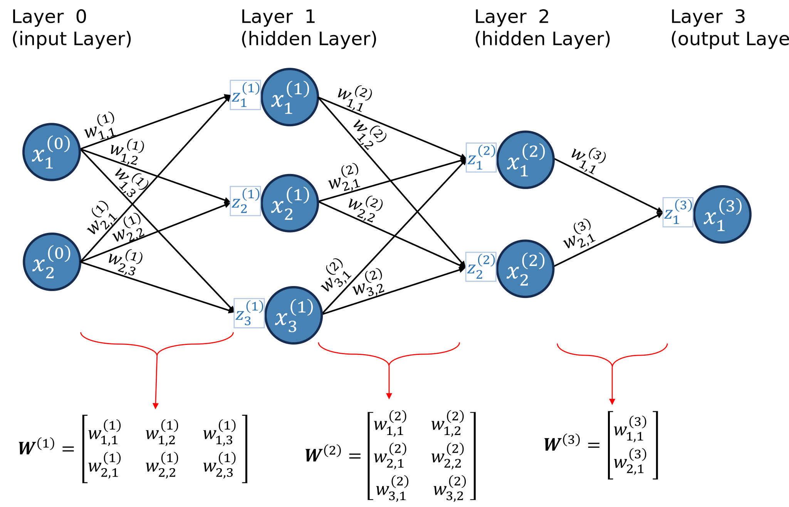
The matrix {\bf{W}}^{(l)} contains the weights connecting neurons in layer l-1 to neurons in layer l. It has n^{(l-1)} rows and n^{(l)} columns. The ith row of {\bf{W}}^{(l)} are all weights “leaving” neuron i from layer l-1. The jth column of {\bf{W}}^{(l)} are all the weights arriving to neuron j in layer l-1. Figure 5 illustrates these points.
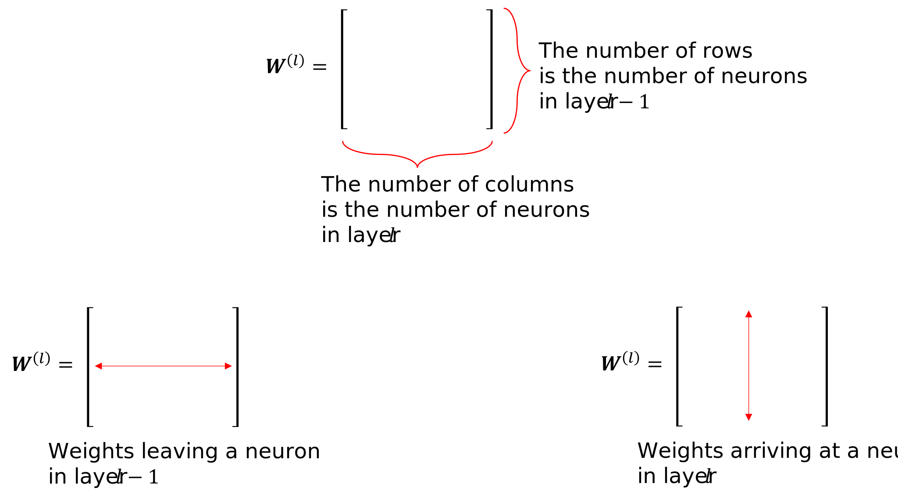
For example, the second row of {\bf{W}}^{(2)} has all the weights leaving neuron 2 from layer 1, as shown in Figure 6; while the second column has all the weights arriving at neuron 2 in layer 2, as illustrated in Figure 9.
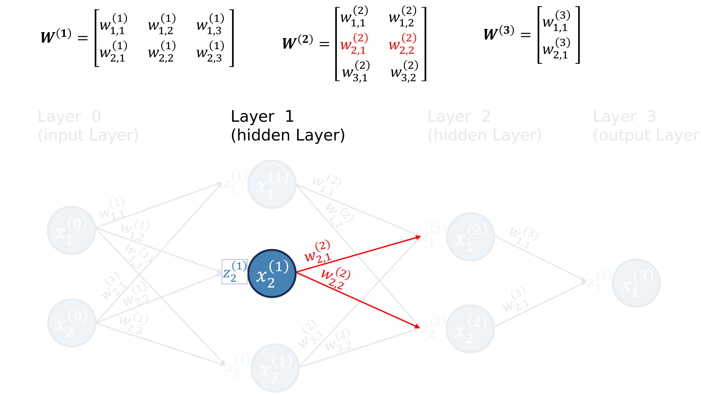
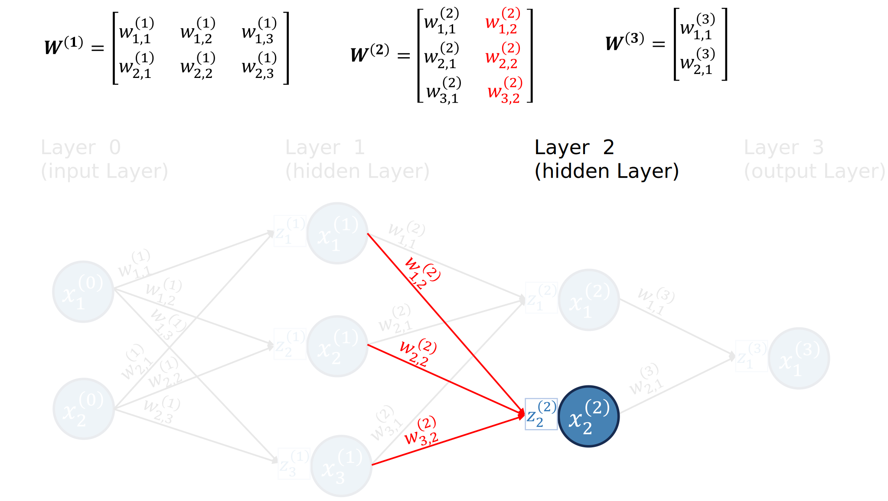
Now that we understand the notation, we are ready to introduce the necessary equations.
- Receptors (for the ith training sample): z^{(l)}_{i, k} =\sum_{j=1}^{n^{(l-1)}} w^{(l)}_{j, k}x^{(l-1)}_{i,j} + b^{(l)}_k,\quad l=1,...,L, \quad \text{and} \quad j=1,...,n^{(l)}
- Neurons (for the ith training sample): x^{(l)}_{i, k}=a\left(z^{(l)}_{i, k}\right),\quad l=1,...,L, \quad \text{and} \quad j=1,...,n^{(l)} where a is a non-linear function called activation function. We will discuss activation functions in more detail later. For now, we will use a(x)=\max\left\{0, x\right\}.
- Note: for the input layer, l=0, x^{(0)}_j is just the feature j of the input vector.
Okay, I agree; the notation is heavy. We have a lot of things to keep track of, such as layers, receptors, neurons, and weights, so we need a lot of symbols and indices. For this reason, I encourage the reader to go back to Figure 2, pick a neuron in a hidden layer, and write down the equations for that neuron while identifying the elements being used in the diagram.
Example 1 For us to go through an example of the feedforward part of the neural network, let us get some synthetic data with two features as well as define some values for the weights.
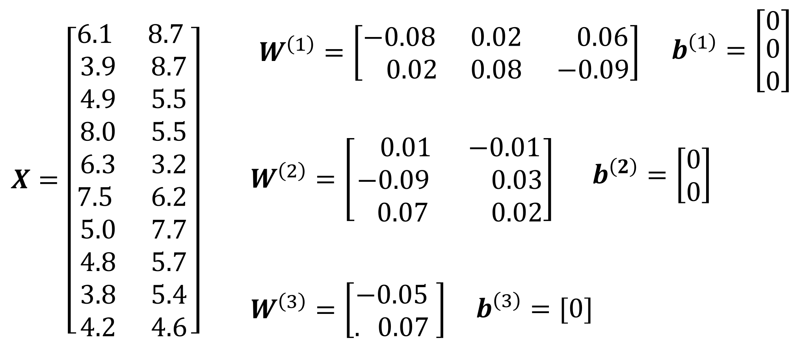
Now, we can calculate the forward pass of the neural network. Let’s do it for the first row in our data, i.e., for the input vector x=(6.1, 8.7).
Receptors in Layer 1: z^{(1)}_1 =\sum_{i=1}^{2} w^{(1)}_{i, 1}x^{(0)}_i = -0.314 z^{(1)}_2 =\sum_{i=1}^{2} w^{(1)}_{i, 2}x^{(0)}_i = 0.818 z^{(1)}_3 =\sum_{i=1}^{2} w^{(1)}_{i, 3}x^{(0)}_i = -0.417
Receptors in Layer 2: z^{(2)}_1 =\sum_{i=1}^{3} w^{(2)}_{i, 1}x^{(1)}_i = -0.07362 z^{(2)}_2 =\sum_{i=1}^{3} w^{(2)}_{i, 2}x^{(1)}_i = 0.02454
Receptor in Layer 3: z^{(3)}_1 =\sum_{i=1}^{2} w^{(3)}_{i, 1}x^{(1)}_i = 0.0017178
Neurons in Layer 1: x^{(1)}_1 = \max\left\{0, z^{(1)}_1\right\} = 0\ \ \ \ \ \ \textcolor{white}{\sum_{i=1}^{2}} x^{(1)}_2 = \max\left\{0, z^{(1)}_2\right\} = 0.818 \textcolor{white}{\sum_{i=1}^{2}} x^{(1)}_3 = \max\left\{0, z^{(1)}_3\right\} = 0\ \ \ \ \ \ \textcolor{white}{\sum_{i=1}^{2}}
Neurons in Layer 2: x^{(2)}_1 = \max\left\{0, z^{(2)}_1\right\} = 0\ \ \ \ \ \ \ \ \ \ \textcolor{white}{\sum_{i=1}^{2}} x^{(2)}_2 = \max\left\{0, z^{(2)}_2\right\} = 0.02454 \textcolor{white}{\sum_{i=1}^{2}}
Neuron in Layer 3: x^{(3)}_1 = \max\left\{0, z^{(3)}_1\right\} = 0.0017178 \textcolor{white}{\sum_{i=1}^{2}}
Let’s now visualize this result in the diagram. We will use two decimal places due to space constraints.
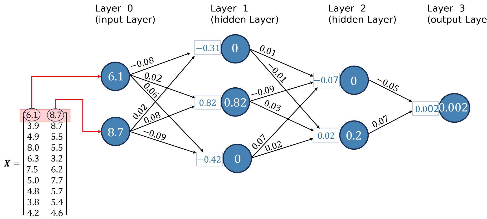
Congratulations! You have completed the forward pass of the neural network.
I’ll just note here that the activation function used in the output layer usually changes according to the problem. For example, for regression problems, a common choice is the identity function f(z) = z. If we used f(z) = \max\left\{0, z\right\}, we would never be able to predict a negative value, an undesirable property. We won’t worry about this for now.
Matrix Notation
To implement a Neural Network in Python from scratch, we will need to use the highly optimized Numpy’s vectorization; so, let’s introduce the matrix notation here. The matrix notation also has the advantage of simplifying the steps. Note that everything is almost exactly the same; the only difference is that, with the matrix notation, we will be considering the entire dataset.
We will denote matrices with capital bold letters (e.g., \bf{X}, {\bf{W}}^{(1)}), vectors as lowercase bold letters (e.g., {\bf{x}}_1). Also, vectors are always column vectors (multiple rows, one column). Here are the equations in matrix format:
Receptors: {\bf{Z}}^{(l)} = {\mathbf{X}^{(l-1)}} \mathbf{W}^{(l)} + \mathbf{1}\left(\mathbf{b}^{(l)}\right)^T \tag{1} where \mathbf{1} is a column vector of ones with n rows and T stands for transpose. The operation \mathbf{1}\left(\mathbf{b}^{(l)}\right)^T is Numpy’s broadcast.
Neurons: {\bf{X}}^{(l)} = a\left({\bf{Z}}^{(l)}\right) \tag{2} where a\left({\bf{Z}}^{(l)}\right) means we apply the activation function a to every single element of {\bf{Z}}^{(l)}.
The notation becomes much simpler, doesn’t it? Let’s take a closer look at {\bf{Z}}^{(l)} in Figure 10 .
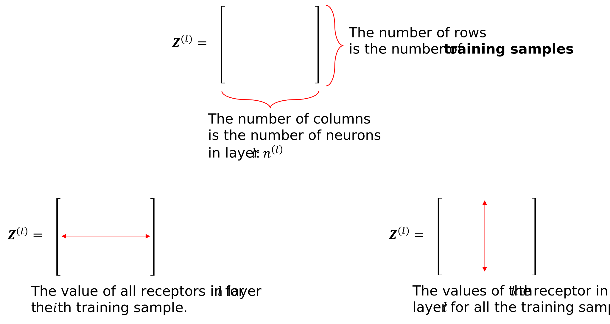
Now, let’s go through Example 1 again, but this time, we will use matrix notation.
Example 2
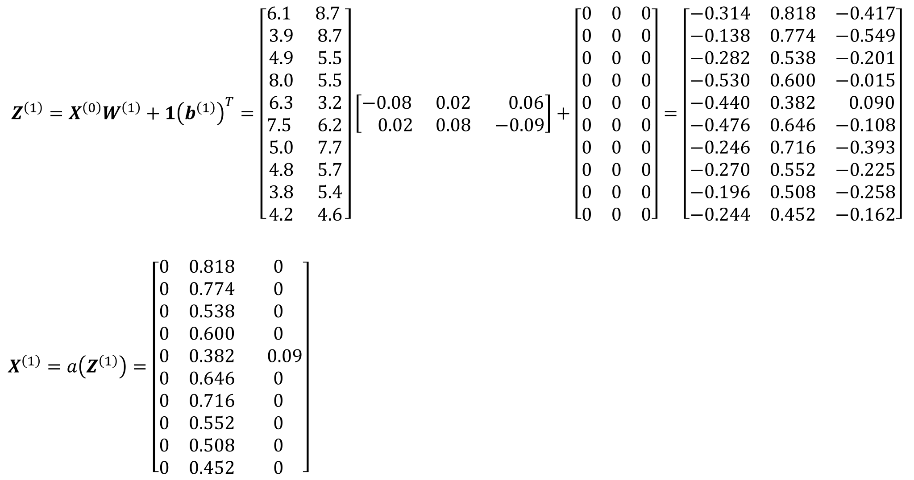
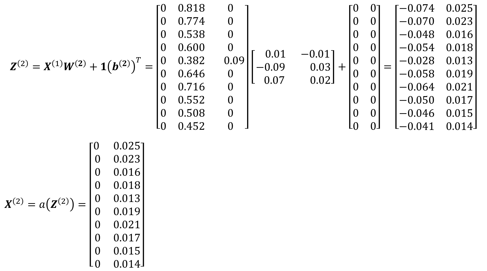
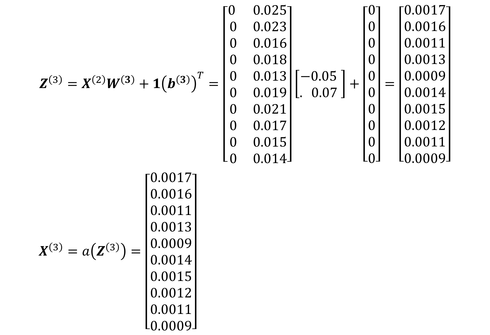
# We need the numpy library
import numpy as np
# Creating a random number generator (set seed=1)
rng = np.random.default_rng(seed=1)
# Creating data
data = np.round(rng.uniform(3, 9, size=(10,2)), 1)
Y = np.round(np.sum(data**2, axis=1) + rng.normal(loc=0, scale = 3, size=10), 1)
Y_binary = (np.sum(data**2, axis=1) > 80 ) + 0
# Initializing weights
W1 = np.round(rng.uniform(-0.1, 0.1, size=(2,3)), 2)
W2 = np.round(rng.uniform(-0.1, 0.1, size=(3,2)), 2)
W3 = np.round(rng.uniform(-0.1, 0.1, size=(2,1)), 2)Next, we can calculate {\bf{Z}}^{(1)}, {\bf{Z}}^{(2)}, and {\bf{Z}}^{(3)} and {\bf{X}}^{(1)}, {\bf{X}}^{(2)}, and {\bf{X}}^{(3)}
Z1 = data @ W1
X1 = np.fmax(0, Z1)
Z2 = X1 @ W2
X2 = np.fmax(0, Z2)
Z3 = X2 @ W3
X3 = np.fmax(0, Z3)